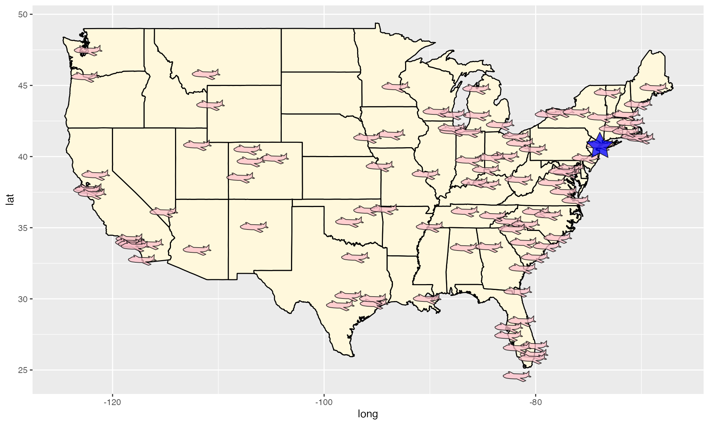

Adding glyphs on scatterplot
Wayne Oldford and Zehao Xu
2022-10-22
glyph.RmdGlyphs can be used as point symbols in a scatterplot to convey more information on each point. This information could range from providing a more evocative picture for each point (e.g., an airplane for flight data or a team’s logo for sports data) to incorporating quantitative information (e.g., the values of other variables in a serial axes or star glyph or as a Chernoff face).
In ggmulti we provide “glyph” layers to help add this
information as point symbols on a plot (Waddell and Oldford
2020).
Polygon glyphs
Consider, for example, the lower 48 USA destinations of “nyc” flights in 2013. Each destination could be marked as a “airplane” polygon symbol and New York city is highlighted by a blue star.
library(ggmulti)
library(nycflights13)
library(maps)
# Flight destinations
destinations <- nycflights13::airports %>%
dplyr::rename(dest = faa) %>%
dplyr::semi_join(nycflights13::flights, by = "dest") %>%
dplyr::mutate(tzone = gsub("America/", "", tzone)) %>%
dplyr::filter(lon > -151,
lat < 55)
# New York City coordinates
NY <- data.frame(
lon = -73.935242,
lat = 40.730610
)
US <- map_data("state") %>%
ggplot(aes(long, lat)) +
geom_polygon(mapping = aes(group = group),
color="black", fill="cornsilk")
NYflightDestinationMap <- US +
geom_polygon_glyph(data = destinations,
mapping = aes(x = lon, y = lat),
fill = "pink",
# negate x to have each plane face west
polygon_x = -x_airplane,
polygon_y = y_airplane,
alpha = 0.75) +
geom_polygon_glyph(data = NY,
mapping = aes(x = lon, y = lat),
polygon_x = x_star,
polygon_y = y_star,
alpha = 0.75,
fill = "blue")
NYflightDestinationMap
Package “ggmulti” provides several polygon coordinates that can be
used in geom_polygon_glyph, check
help("polygon_glyph", "ggmulti").
Image glyphs
We can also load image files (png, jpeg, etc) and set each image as a point glyph. Let’s draw a chart of two 2020 Final NBA Teams.
library(png)
img_path <- list.files(file.path(find.package(package = 'ggmulti'),
"images"),
full.names = TRUE)
Raptors <- png::readPNG(img_path[grepl("Raptors", img_path)])
Warriors <- png::readPNG(img_path[grepl("Warriors", img_path)])
# Golden State Coordinate
GoldenState <- data.frame(
lon = -119.4179,
lat = 36.7783
)
Toronto <- data.frame(
lon = -79.3832,
lat = 43.6532
)
# Get the Canada lakes
cdn.lakes <- maps::map("lakes",
plot=FALSE,
fill=TRUE)$names[c(7,8,27,22, 25,
68:73, 82, 85
)]
US +
geom_polygon(
data = maps::map("world", "Canada", fill=TRUE, plot=FALSE),
mapping = aes(long, lat, group = group),
fill="#ffcccb", colour = "black"
) +
geom_polygon(
# lakes in Canada
data = maps::map("lakes", cdn.lakes, plot=FALSE, fill=TRUE),
mapping = aes(long, lat, group = group),
fill="lightblue", colour = "black"
) +
geom_image_glyph(data = GoldenState,
mapping = aes(x = lon, y = lat),
images = Warriors,
imagewidth = 1,
imageheight = 1,
colour = NA,
size = 3) +
geom_image_glyph(data = Toronto,
mapping = aes(x = lon, y = lat),
imagewidth = 1,
imageheight = 1,
colour = NA,
size = 3,
images = Raptors) +
ggtitle("2019 NBA Finals")
Serialaxes glyphs
Additionally, ‘serial axes’ can also be drawn as glyphs.
ggplot(iris) +
geom_serialaxes_glyph(
mapping = aes(Sepal.Length, Sepal.Width, colour = Species),
# set serial axes data set (could be different from the original data)
serialaxes.data = iris,
# parallel or radial axes
axes.layout = "radial",
# sequence of serial axes
axes.sequence = colnames(iris)[-5]
)
In this figure, we can tell the specie ‘setosa’ lays on the left top corner and the glyph shape is like a triangle that is very distinguishable from the rest two species.